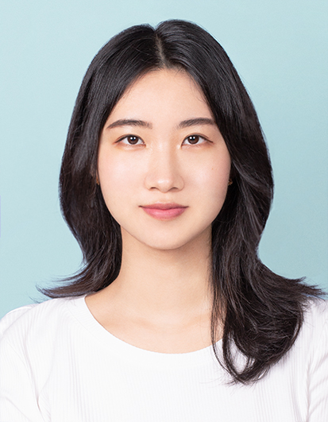
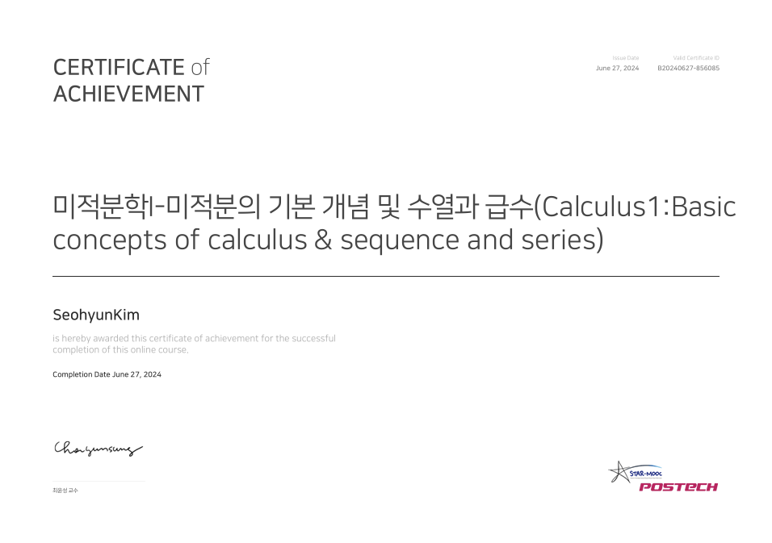

Seohyun Kim
About Me
I grew up in a small rural city in South Korea, where my academic interests were first sparked in an isolated environment.
Over time, this foundation has evolved into a strong focus on Statistical Inference, Computational Statistics, Machine Learning, and Large Language Model.
Recently, I've also become passionate about Pilates, yoga, meditation, and coffee — hobbies that both inspire and energize my research.
Contact
Email (school): seohyun03@hanyang.ac.kr
Email (personal): dorothy5018@gmail.com
Education
M.S in Business Informatics (SEP 2021 - AUG 2023)
Hanyang University (Seoul, South Korea)
Research Lab: Business Intelligence and Strategy Lab
Dissertation: A Study on the User Evaluation Prediction of UI Design.
Myongji University (Seoul, South Korea)
Major: Library and Information Science
Minor: Business Administration
Publications
-
"Exploring Webpage Aesthetic Perception Among Users: A Color-Centric Approach”
Seohyun Kim and Misoo Shin.
Preparing for submission to Journal of the Association for Information systems
- Methodology: Customized Tabnet, ResNet, SENet(Squeeze-Excitation Networks) -
“Analyzing the Influence of Payment Models and Visual Elements on the Success of Open World Adventure Games: An Empirical Approach”
Seohyun Kim, Jungun Moon, Seongho Cho, and Misoo Shin.
Journal of Information Technology Services (Under review)
- Methodology: EfficientNet, XGBoost -
“Comparative Analysis of Metaverse Research Trends and Public Opinion: Using Topic Modeling algorithm”
Seohyun Kim, Seongho Cho, and Misoo Shin (2023).
Journal of the Korean Operations Research and Management Science Society, 48(3), 41-53.
- DOI: 10.7737/JKORMS.2023.48.3.041
- Methodology: BERTopic, Umap, HDBSCAN, LDA
Conferences
-
“Analyzing the Influence of Payment Models and Visual Elements on the Success of Open World
Adventure Games: An Empirical Approach”
Seohyun Kim, Jungun Moon, Seongho Cho
Presented at the 25th International Conference on Electronic Commerce, and Korean Society of IT services 2024 Spring Joint Conference, 2024, Seoul -
“Comparative Analysis of Metaverse Research Trends and Public Perception using Topic Modeling”
Seohyun Kim and Seongho Cho
Presented at the Joint Conference of the Korean Institute of Industrial Engineering, and the Korean Society of Management Science Spring 2023, 2023, Seoul
Work Experience
Research Scientist at EDEN T&S (DEC 2023 - MAR 2024)
- Developed and implemented advanced OCR(Optical Character Recognition) solutions, enhancing data extraction and accuracy.
- Designed and created comprehensive training and testing datasets for OCR systems.
- Authored comprehensive onboarding guides for new employees.
- Prepared educational materials and sourced relevant texts for courses.
- Assisted in grading assignments and exams to support instructional goals.
- Managed metadata (MARC) for books and resources, and enhanced data organization and retrieval efficiency through cataloguing materials related to Korean studies.
- Implemented data standardization in the Deep Blue Repositories project.
- Participated in the collection project ‘Seoul 1969: Photographs by a Peace Corps Volunteer’.
- Organized and led weekly meetings for interns in other universities’ libraries to improve comprehension of tasks.
Awards & Scholarships
- Excellence Prize: 2022 The 2nd K-AI Manufacturing Data Analysis Contest (DEC 2022)
- Globalism Scholarship (SEP 2018)
- President’s Special Scholarship (MAY 2017)
- President’s Special Scholarship (SEP 2015)
- President’s Special Scholarship (MAR 2015)
-
Academic Excellence Scholarship (SEP 2014)
Curriculum Vitae (CV)
Projects & Activities
Projects
-
Exploring Webpage Aesthetic Perception Among Users (SEP 2021 - Present)
- Revision for submission in progress
- Analyzed web page aesthetics that could influence the satisfaction of users in web pages
- Solved the lack of robustness and interpretability of models in previous research and the problem the prior scholars only focused on single color and sub-elements
- Utilized deep features and handcrafted feature together and variables relevant to color itself including complementary combinations
- Implemented ResNet, SENet, and revised TabNet
-
Analyzing the Success of Open World Adventure Games (DEC 2023 - Present)
- Revision for submission in progress
- Presented at the 25th International Conference on Electronic Commerce & Korean Society of IT Services 2024 Spring Joint Conference
- Considering specific visual factors and preference of game depending on game genres and the penchant depending on payment models
- Building a Dataset by Collecting Steam Platform Preferences and Images
- Reflecting payment models, character design and background design using EfficientNet and XGBoost
-
Analysis of Metaverse Research Trends and Public Perception (SEP 2022 – AUG 2023):
- Published a paper ‘Comparative Analysis of Metaverse Research Trends and Public Opinion: Using Topic Modeling algorithm’
- Presented Joint Conference of the Korean Institute of Industrial Engineering, and the Korean Society of Management Science Spring 2023
- Crawling Korean text data in Korean article platform RISS and Twitter about Metaverse from 2021 to 2022, and building paper title dataset
- Analyzed the change and transition of public opinion and research trends depending on time flow
- Used LDA and BERTopic based on characteristics of each data
-
KT Alley Economy Project (OCT 2022 - JAN 2023):
Suggested solutions and strategies to help small business owners increase profits by analyzing various data sources.
- Analyzed floating population, regional sales, and commercial districts using KT’s proprietary programs.
- Implemented Latent Dirichlet Allocation (LDA) to examine social media data from platforms like Instagram and Brunch.
- Provided actionable insights on holiday promotions, delivery services, and new menu categories based on data analysis results.
-
Quality Error Prediction Analysis Model for Defect Prevention (JUL 2022 - DEC 2022):
The preemptive detection of melting tank error
- Researched on papers relevant to defects in the dissolution process and particle dissolution.
- Participated in data processing and visualization.
- Cooperated with utilize DNN to classification analysis with Tensorflow2 and GAN to predict future data distribution.
- Prepared presentation materials and reports of the project.
-
Lpay Activation and Marketing Strategy Based on Machine Learning (MAY 2022 - AUG 2022): Development of Lpay customer activation by customized marketing strategies
depending on the characteristics of each customer group- Participated in data visualization and developing customer segmentation model by XGBoost Classifier.
- Suggested marketing strategies and events based on the penchant of cohort.
Hackathons
-
Oil Condition Classification of Construction Machinery (DEC 2022)
- Public LB 24th, Private LB 81st out of 1444 participants, ranked in the top 6%
- Technologies used: Data preprocessing, Utilized XGBClassifier
-
2022 Tourism Data AI Competition (SEP 2022 - OCT 2022)
- Public LB 141st, Private LB 121st out of 1315 participants, ranked in the top 10%
- Technologies used: Text augmentation wtih synonym replacement and sentence combining and splitting, CountVectorizer, TfidfVectorizer, BERT
-
Travel Package Booking Prediction AI Hackathon (AUG 2022 - SEP 2022)
- Public LB 74th, Private LB 38th out of 356 participants, ranked in the top 11%
- Technologies used: Data preprocessing, Created derived variables, Utilized Staking with XGBClassifier, CatBoostClassifier, LGBMClassifier
-
AI Competition for Predicting Antenna Performance of Self-Driving Sensors (AUG 2022)
- Public LB 115th, Private LB 130th out of 2082 participants, ranked in the top 13%
- Technologies used: Data preprocessing, Created derived variables, Utilized Staking with XGBRegressor, CatBoostRegressor, LGBMRegressor, Multioutput Classifier
-
Shopping Mall Branch Sales Prediction AI Hackathon (JUL 2022 - AUG 2022)
- Public LB 73rd, Private LB 74th out of 1293 participants, ranked in the top 6%
- Technologies used: Data preprocessing, Created derived variables, Utilized CatBoostRegressor
-
Population Data-Based Income Prediction (APR 04 - APR 2022)
- Public LB 10th, Private LB 6th out of 543 participants, ranked in the top 2%
- Technologies used: Data preprocessing, Created derived variables, Utilized CatBoostClassifier
Mathematics and Statistics-related classes
- Machine learning: Korea National Open University, 34478 (2024 Fall)
Core concepts in supervised and unsupervised learning, statistical principles, and model optimization, ensemble, decision tree, Randomforest, SVN, Neural Network, Deep learning - Python Programming: Korea National Open University, 34174 (2024 Spring)
Introduction to core Python syntax, data structures, and problem-solving through functions and libraries - Discrete Mathematics: Korea National Open University, 34256 (2024 Spring)
Function including Surjective function and Injective fuction, Boolean Algebra, graph, treem combinatorics, Number Theory - Software Engineering: Korea National Open University, 34519 (2024 Spring)
Principles of software development, design methodologies, testing, and project management for reliable and scalable systems - Linear Algebra: Korea National Open University, 34353 (2023 Fall)
Fundamental concepts of matrix, Gaussian Elimination, matrix operations, determinant vectors, linear transformations, matrix diagonalization, inner product space and their applications in solving systems of equations - C Programming: Korea National Open University, 34308 (2023 Spring)
Basics of C syntax, memory management, pointers, and efficient problem-solving with structured programming - Artificial Intelligence: Korea National Open University, 34524 (2023 Spring)
Blind search, heuristic search, game tree, knowledge representation, propositional logic, propositional formula, Fuzzy logic, machine learning including decision tree, clustering, neural network - Natural Language Processing and Its Application for Social Science: Hanyang University, ECO9055 (2022 Fall)
Text preprocessing, Word to Bag, N-gram, TF-IDF, Vector similarity, Machine learning, Word embedding, Word2Vec, Deep Learning, Text Classification based on RNN, Attention, Transformer, BERT - Marketing Intelligence: Hanyang University, BUI6006 (2022 Spring)
Regression model, diffusion model, price response model, marketing dynamics, time series model including ARIMA, panel data model, system equation model, limited dependent model including Logistic regression,
count data model including Poisson regression, network centrality, Difference-in-Difference - Analytics Programming with R: Hanyang University, BUI6004 (2022 Spring)
Core techniques in data structures, preprocessing, exploratory analysis, and foundational models like linear regression and LDA - Probability and Statistics: Hanyang University, COE8042 (2021 Fall)
Fundamentals of sampling and probability distributions, interval estimation, hypothesis testing, linear regression, experimental design, and multivariate analysis - Business Decision Modeling & Analysis & Strategy: Hanyang University, BUI6014 (2021 Fall)
Exponential utility, Bayesian inference, decision trees, linear programming, optimization, game theory, and simulation - Database System: Myongji University, HAF01426 (2019 Spring)
Core principles of database design, SQL, normalization, and management of relational databases - Data Literacy: Myongji University, HAF01427 (2018 Spring)
Exploratory Data Analysis with R, Sampling distribution including t-distribution, Significance Test, Linear Regression, Cluster analysis - Network Analysis: Myongji University, HAF01429 (2017 Fall)
Study of network structures, graph theory applications, centrality measures, and community detection in complex networks - Introduction to Data Programming: Myongji University, HAF01329 (2017 Fall)
Exploratory Data Analysis including correlation and plots, Data Structure, Data typical values and variability inference - Web Programming & Web server construction: Myongji University, KMI02105 (2015 Fall)
Introduction to HTML, CSS for front-end design, and foundational server setup and management
Additional Education
- Calculus1:

Basic concepts of calculus & sequence and series - Linear Algebra:

Linear relationships and transformations in space using vectors and matrices
Extracurricular Activities
Graduate
- Leader in Study Sessions in Business Inteligence and Strategy Lab (2022)
Undergraduate
-
Startup Project Reborn (FEB 2016 - AUG 2017)
- Planning and Producing Travel Content for Foreign Tourists especially backpackers
-
Samsung Group University Student Supporters (FEB 2016 - AUG 2016)
- Planning and Proposing Online Marketing Strategies for University Students
-
Club Dreamforest (FEB 2015 - FEB 2016)
- Official Blog Administrator: Participated in creating promotional content for events and contributed to producing content for the official blog.
- Planning and managing events for university students and young adults.
- Networking Event "Making Real Buddy in Korea" Staff and Program Facilitator.
- Motivational Talk "Wanderlust Cells" Staff and Program Facilitator.
- Workshop "A Day of Communicating with Software" Staff and Program Facilitator.
-
Traditional Samulnori (Korean Percussion) Club (MAY 2014 - JUL 2016)
- Club Leader (FEB 2015 - FEB 2016)